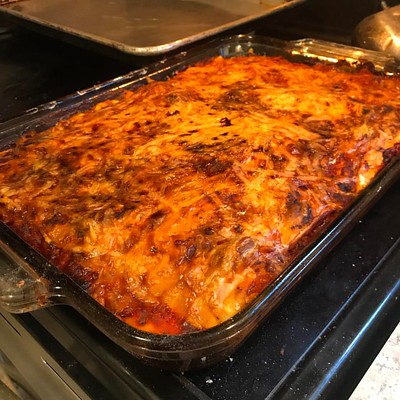

This recipe is a variation of my mother’s recipe, which she got from her friend many decades ago. It’s time-tested, and we’ve never heard anything negative about it! There are never any complaints, and leftovers are a must. So go ahead—make two or three dishes! 😉
Ingredients:
1.5 lbs fresh ground beef
2 tablespoons olive oil
1 cup freshly diced onion
1 tablespoon freshly minced garlic
2 tablespoons sugar
Freshly chopped oregano and/or basil, to taste
Salt and pepper, to taste
1 box of your favorite lasagna noodles
10 oz cottage cheese
4 cups mozzarella cheese
½ cup freshly grated Parmesan cheese
1 4-oz can Contadina tomato paste
1 16-oz can Hunt’s tomato sauce
1 29-oz can Hunt’s tomato sauce
Steps
On low/medium heat, sauté olive oil, onions, garlic, herbs, salt, pepper, and sugar for approximately five minutes.
Stir in fresh ground beef.
Mix and simmer until the beef is thoroughly browned.
Mix in tomato paste and sauces.
Simmer and stir frequently for approximately 15–20 minutes.
Reduce heat to low and stir in cottage cheese.
Bring a large pot of water to a boil and cook lasagna noodles until al dente.
In a 9x13-inch (or standard baking dish) pan, spoon a layer of sauce.
Layer noodles on top of the sauce.
Layer with mozzarella cheese, sprinkle with Parmesan, and repeat layers as desired for the thickness of your lasagna.
Bake in a preheated oven at 350°F (175°C) for 45 minutes to 1 hour.